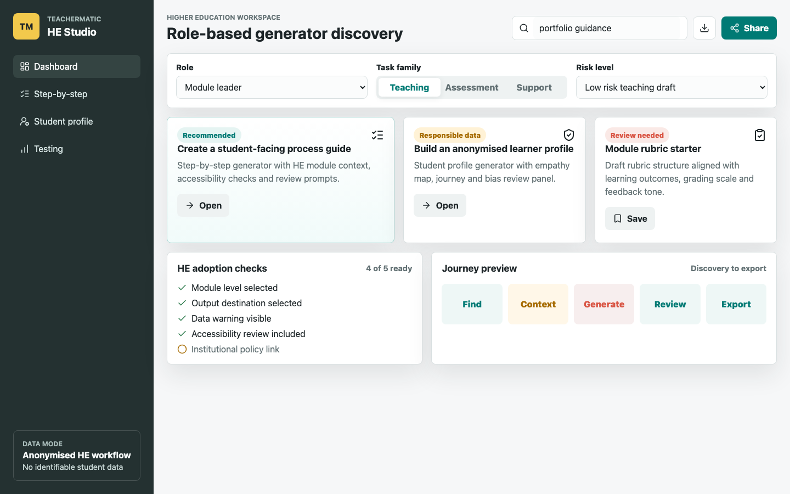
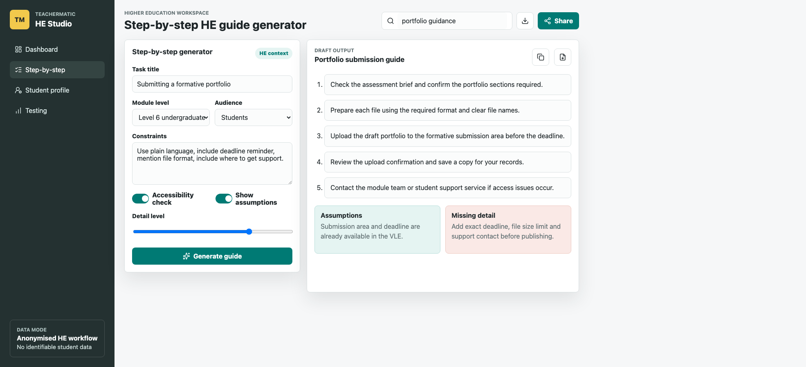
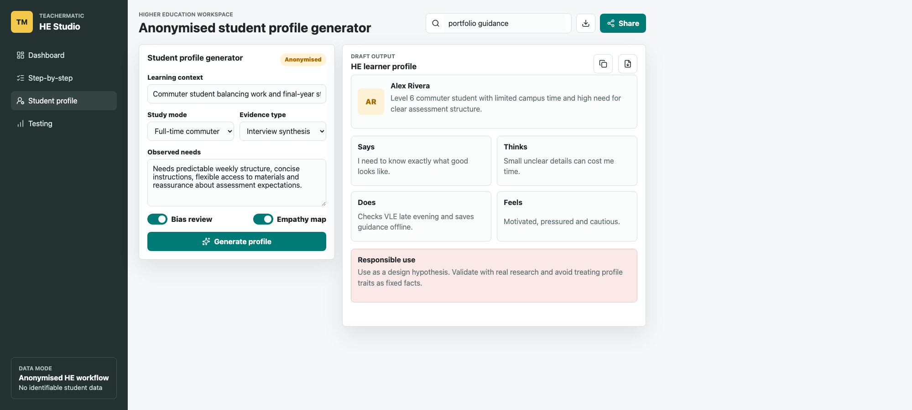

Recommended
Create a student-facing process guide
Step-by-step generator with HE module context, accessibility checks and review prompts.
Higher Education workspace
Step-by-step generator with HE module context, accessibility checks and review prompts.
Student profile generator with empathy map, journey and bias review panel.
Draft rubric structure aligned with learning outcomes, grading scale and feedback tone.
Submission area and deadline are already available in the VLE.
Add exact deadline, file size limit and support contact before publishing.
Level 6 commuter student with limited campus time and high need for clear assessment structure.
Use as a design hypothesis. Validate with real research and avoid treating profile traits as fixed facts.
Target after prototype revision.
Discovery label and missing policy link.
Mean post-task score out of 5.
| Task | Result | Observed issue | Design response |
|---|---|---|---|
| Find generator | 2/3 completed | P3 ran out of time after 10 minutes. | Make generator cards, search and HE task labels more prominent. |
| Create guide | 2/3 completed | P2 did not know how to operate the Step-by-step generator. | Add an example prompt, clearer generate action and inline guidance. |
| Create profile | 3/3 completed | P1 took 10 minutes and struggled to find profile settings. | Move profile settings closer to the main input fields. |


